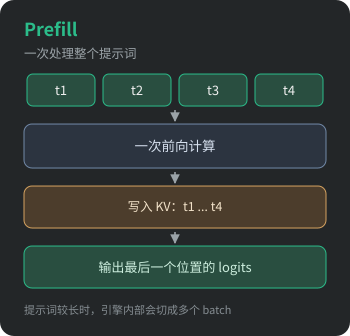
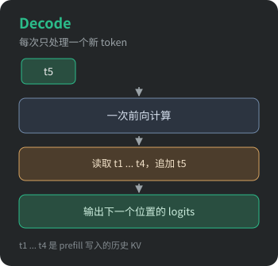

从一个两百多行的示例出发，看清一次文本生成的全过程。
llama.cpp 是用 C++ 写的 LLM 推理引擎，代码量不小，直接扎进 src/ 容易迷路。笔者打算从最小的可运行示例 examples/simple 开始读：它只有两百多行，但加载模型、分词、前向计算、采样这几步一个不少，正好把一次推理的轮廓勾勒出来。
给定一段提示词，模型要一个 token 一个 token 地把回答写出来。这个过程在推理引擎里被拆成两个阶段：prefill 处理提示词，decode 根据已经生成的内容继续往下写。
一次推理的流程

图中箭头表示执行顺序。第一个输出 token 来自 prefill 的 logits，此后每步 decode 只处理上一步刚生成的 token，循环往复，直到遇到结束符或达到长度上限。
Prefill 与 Decode 的分工


两个阶段跑的是同一套权重、同一段前向代码，区别在输入形状：
| Prefill | Decode | |
|---|---|---|
| 输入 | 提示词的 n 个 token | 1 个 token |
| 前向次数 | 通常一次（长提示词会被切批） | 每生成一个 token 一次 |
| KV cache | 写入 n 个位置 | 读取全部历史，追加 1 个位置 |
| 计算特征 | 矩阵又宽又满，计算密集 | 权重只服务 1 个 token，带宽压力大 |
Prefill 的 tokens/s 远高于 decode，「长提示词的首字延迟」也主要花在 prefill 上，根子就在这张表里：prefill 把整段提示词拼成一个大矩阵，算力能跑满；decode 每步只有一个 token，却要把全部历史 KV 读回来，瓶颈从算力换成了带宽。
KV cache 是两阶段的交汇点，它的大小可以直接估算：
$$
\text{KV 占用} \approx 2 \times L \times H_{kv} \times d \times n_{ctx} \times \text{sizeof(dtype)}
$$
其中 2 表示 K 和 V 两份，$L$ 是层数，$H_{kv}$ 是 KV 头数（GQA 下小于 Q 头数），$d$ 是每个头的维度。上下文越长、层数越多，这块显存涨得越快，后面的文章再展开。
在 llama.cpp 里是怎么写的
示例没有把 prefill 和 decode 拆成两个接口，而是先把提示词填进一个 batch 提交，然后进入生成循环：
1 | batch_set_tokens(batch, prompt_tokens.data(), n_prompt, 0); // 提示词整体作为一个 batch |
对照上面的流程，几处细节值得记下来：
batch_set_tokens做的事情：清空 batch，逐个加入 token，并用llama_batch_ext_set_pos()显式指定每个 token 的绝对位置。- 输出位置只有一个：辅助函数里只对 batch 的最后一个位置调
llama_batch_ext_set_output_logits()。提示词前 n-1 个位置照样要过完整的前向（否则 KV 不完整），但不需要最后的 logits 投影，这部分开销被省掉了。 - 位置从
n_pos接着数：decode 阶段的 token 位置必须紧接在已经处理过的 token 之后，KV cache 里的位置才是连续的。
1 | # 编译后直接跑（默认生成 32 个 token） |
示例打开了性能统计（ctx_params.no_perf = false），运行结束会把两段耗时分开打印：prompt eval time 对应 prefill，eval time 对应 decode，单位都是每 token 毫秒和每秒 token 数，很适合用来验证上面那张表。
调用顺序

几个容易混淆的点
**prefill 的
type也是LLAMA_PROCESS_TYPE_DECODE**：llama_process()只有 encode / decode 两种类型，提示词和单 token 走的是同一条路径，区别只在 batch 里的 token 数。n_batch与n_ubatch不是一回事：
n_batch: logical maximum batch size that can be submitted to llama_decoden_ubatch: physical maximum batch size—— 摘自 include/llama.h
提交超过 n_ubatch 的 batch 时，引擎内部会切成多个 ubatch 分批计算。所以「prefill 只有一次前向」是简化说法，精确地说是一次 llama_process() 调用，内部可能分成多批。
- 上下文位置要预留够：示例把
n_ctx设成n_prompt + n_predict - 1。提示词占n_prompt个位置，之后每生成一个 token 再占一个；位置不够时最直接的报错就是上下文超限。
小结
- 一次推理 = 1 次 prefill + N 次 decode，共用同一段前向代码，差别只在输入形状与访存模式
- KV cache 连接两个阶段：prefill 写入，decode 读取并追加
- decode 每步的位置必须紧接历史位置，logits 只需要最后一个位置
下一篇再往下钻：提示词是怎么被切成 token 的，以及 KV cache 在内存里长什么样。
参考
- examples/simple/simple.cpp：本文对照的示例
- examples/simple/README.md：示例的运行输出
- include/llama.h：
llama_process()、llama_batch_ext的接口注释